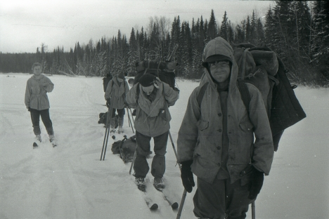
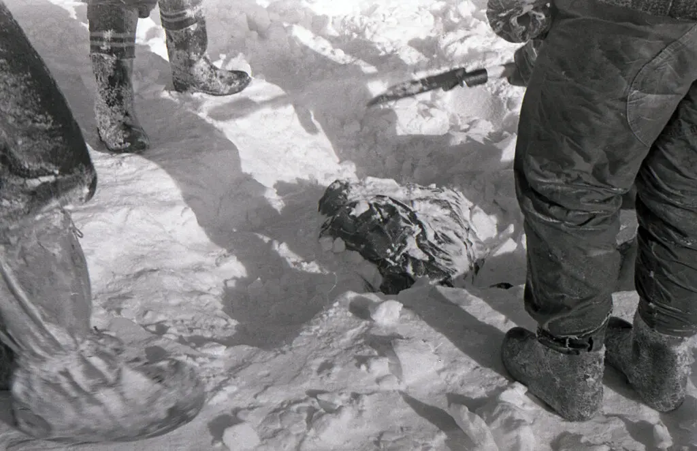

Il Caso Djatlov
1.La Spedizione

Nel gennaio 1959, Igor Dyatlov, un giovane escursionista
sovietico, guidò una spedizione di nove persone verso
il monte Otorten, negli Urali settentrionali.
Il gruppo era composto da studenti esperti dell'Istituto
Politecnico degli Urali. Il viaggio era
stato pianificato con attenzione, ma nessuno
poteva prevedere il tragico epilogo.
2.Il Misterioso Ritrovamento

Quando il gruppo non fece ritorno, le squadre
di soccorso iniziarono le ricerche. Il 26 febbraio 1959,
la loro tenda fu trovata abbandonata e strappata
dall'interno. Gli escursionisti erano fuggiti in
piena notte, lasciando dietro di sé vestiti e attrezzature.
I corpi furono scoperti a distanza dalla tenda, alcuni
seminudi e altri con gravi traumi inspiegabili.
3.Le Ferite Inquietanti

Le autopsie rivelarono dettagli sconcertanti:
- Sei membri morirono per ipotermia.
- Tre presentavano traumi inspiegabili: uno con il cranio fratturato,
due con il torace schiacciato da una forza paragonabile a un incidente d'auto.
- Alcuni corpi avevano gli occhi mancanti, uno era privo di lingua,
e altri mostravano segni di esposizione a radiazioni.